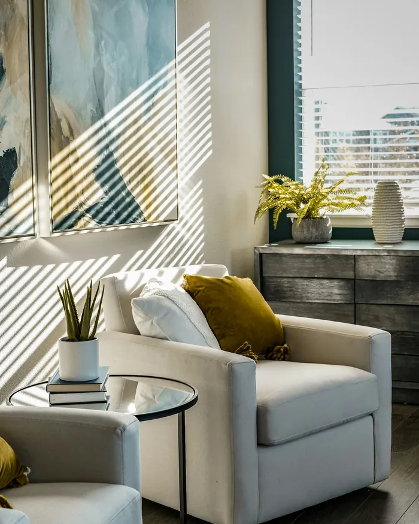

Psicóloga · CRP 16/00000 (registro fictício)
Marina Coutinho
Terapia para adultos que vivem no limite da ansiedade e da sobrecarga.
Atendimento presencial em Vitória e online para todo o Brasil. Sessões de 50 minutos.
- Presencial em Vitória/ES
- Online por vídeo
- Horários também à noite
Sobre mim
Um espaço para você respirar e se ouvir.
Sou psicóloga clínica e atendo adultos desde 2015. Muita gente chega até mim cansada de dar conta de tudo: trabalho, casa, família, as próprias cobranças. Às vezes a ansiedade aparece no corpo antes de virar palavra.
Na terapia, a gente olha para isso com calma. Eu trabalho com a Terapia Cognitivo-Comportamental, uma abordagem que ajuda a entender pensamentos, emoções e hábitos que se repetem, e a construir, junto com você, formas mais leves de lidar com eles.
- Graduação em PsicologiaFormação de 5 anos, com estágio em clínica-escola
- Especialização em Terapia Cognitivo-ComportamentalPós-graduação com supervisão clínica
- Formação contínuaSupervisão e grupos de estudo sobre ansiedade e esgotamento
Como posso ajudar
Temas que chegam ao consultório.
Toque em um tema para ler um pouco sobre ele. Se o seu não estiver aqui, tudo bem: a gente conversa sobre isso na primeira sessão.
Ansiedade
Preocupação que não desliga, aperto no peito, dificuldade para dormir. Entender de onde vem e o que a mantém é o primeiro passo para ela ocupar menos espaço.
Sobrecarga e esgotamento
Quando o cansaço não passa com descanso e tudo parece urgente. Olhamos para limites, rotina e para a cobrança que você faz a si mesma ou a si mesmo.
Luto e perdas
A perda de alguém, de um vínculo ou de um projeto. Um lugar para viver a dor no seu tempo, sem precisar parecer forte.
Relacionamentos
Conflitos que se repetem, dificuldade de dizer não, medo de ficar ou de ir. Entender os seus padrões ajuda a fazer escolhas com mais clareza.
Autoestima
Aquela voz interna que critica tudo. Aprendemos a reconhecê-la e a construir uma relação mais gentil com quem você é.
Mudanças e transições
Mudança de cidade, de carreira, chegada de um filho, fim de um ciclo. Fases de transição pedem espaço para reorganizar a vida por dentro.
Como funciona
Sem pressa, no seu tempo.
- 01
Primeira conversa
Você conta o que te trouxe e a gente vê, junto, se faz sentido seguir.
- 02
Sessões semanais
50 minutos, no consultório ou por vídeo, com sigilo profissional.
- 03
No seu tempo
Sem fórmula pronta: o processo é construído com você, sessão a sessão.
- Enseada do Suá, VitóriaConsultório em prédio comercial, com estacionamento rotativo ao lado.
- Sala reservadaSala com isolamento acústico e espera tranquila, sem recepção cheia.
- AcessívelElevador e banheiro adaptado no andar.
- Por chamada de vídeoEnvio o link antes de cada sessão. Funciona no celular ou no computador.
- Um lugar só seuVale um quarto com a porta fechada, o carro parado ou fone de ouvido para ter privacidade.
- Para todo o BrasilA mesma escuta e o mesmo sigilo do consultório, de onde você estiver.
Consultório
Um lugar calmo, pensado para você.

Rua Exemplo, 120, sala 804Enseada do Suá · Vitória/ES (endereço fictício)
- Segunda a sexta
- 8h às 20h
- Sábado
- 8h às 12h, só online
Dúvidas
Antes de agendar.
Sim. O sigilo é um dever do psicólogo, previsto no Código de Ética Profissional. O que você conta nas sessões não é compartilhado com ninguém, salvo nas situações excepcionais que a própria lei prevê, como risco à vida.
Depende de cada pessoa e do que a trouxe. Nas primeiras sessões a gente combina objetivos e, de tempos em tempos, conversa sobre como o processo está indo.
O valor é informado na primeira conversa pelo WhatsApp, junto com os horários disponíveis.
O atendimento é particular. Emito recibo de cada sessão para você pedir reembolso ao seu plano, se ele oferecer essa opção.
Avise com pelo menos 24 horas de antecedência e a gente remarca para outro horário da mesma semana, se houver.
Para muita gente, sim. O mais importante é ter um lugar reservado e uma conexão estável. Na primeira conversa avaliamos juntos qual formato faz mais sentido para você.
Agendar
Vamos marcar uma primeira conversa?
Preencha o que for confortável. A mensagem fica pronta para o meu WhatsApp e eu respondo em até um dia útil, com os horários disponíveis.
Não é um serviço de emergência. Se você estiver em crise ou pensando em se machucar, ligue 188 (CVV, 24 horas e gratuito) ou 192 (SAMU).